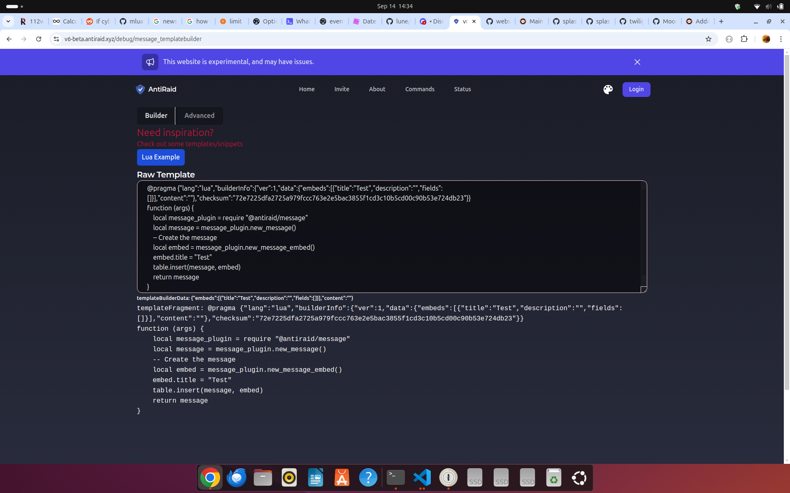
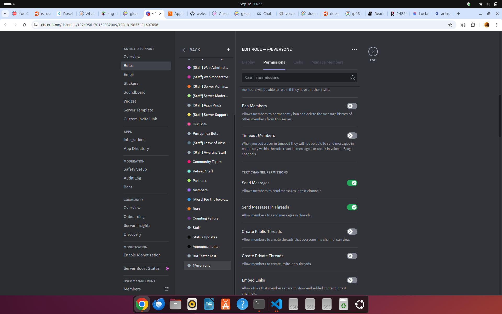

Anti-Raid Documentation
This is the documentation for the Anti-Raid bot.configure multiple CAPTCHA types and settings to suit your server's requirements.
Permissions
Imagine. Imagine a discord bot which you could completely control. You could decide who can use any specific command, who can change the bot's settings, and who can even use the bot at all.
Thats AntiRaid...
AntiRaid has a customizable permission system utilizing both Discord native permissions for ease of use and kittycat for more complex use cases. And for the really unique cases, AntiRaid provides support for Lua script templating which case be used to extend AntiRaid into more complex/unique permission systems itself.
The idea is simple: All roles have permissions attached to them and members can have special permission overrides on top of that. The permissions are then checked when a command is run.
Note: The documentation for this is not yet finished and is a WIP.
Modes
Anti-Raid has two different modes for permission checks depending on how custom your needs are:
Simple: In simple mode, you just need to specify the exact permissions needed to run a command. This is the default mode.Template: If you have more advanced needs, you can also use custom templates to determine if a user has the required permissions. SeeTemplatingfor more information on how templating works.
Simple Permission Checks
Since not everyone knows how to code, AntiRaid provides a simple permission checking system builtin that should be enough for most. Heres how it works:
- Commands are the base primitive of AntiRaid. These commands can be either real or virtual. Real commands are commands that you can actually run (as well as configure) while virtual commands are placeholders for permissions, help commands or external modules that don't use the normal AntiRaid module system [e.g. modules written in Gleam].
- Commands can be configured through either permissions or by simply disabling them (some commands cannot be disabled however to ensure you can't break the bot permanently).
- Server admins can set permissions on their server roles and then override them for specific users through permission overrides.
- Server admins can then set permissions on commands and default permissions on modules. These permissions are then checked when a command is run.
Of course, the above is just an overview of AntiRaid permission system. This is just an overview, of course.
Template Permission Checks
For more advanced users, AntiRaid provides a template system that allows you to create custom permission checks. This is done through the use of our custom Luau templating system.
See the templating guide for more information on how to use Lua templates. Then, just code away!
TIP
For best results, consider limiting server permissions of other users to the minimum required. Then, use AntiRaid for actual moderation. That's better than giving everyone admin permissions and then trying to restrict them with AntiRaid and also allows AntiRaid to work fully!
Templating
At AntiRaid, we prioritize flexibility and customization for our users. To this end, our bot supports advanced templating to allow for extensive personalization of embeds and messages. While many bots utilize proprietary languages or templating engines, we have chosen to leverage Lua—a renowned scripting language widely used in game development and other applications. This decision ensures that our users benefit from a powerful, well-documented, and versatile language, enhancing the capability and ease of customizing their AntiRaid experience.
Note: this documentation is still a work-in-progress and things are still being documented better and better by the day!
Lua Templating
At AntiRaid, we prioritize flexibility and customization for our users. To this end, our bot supports advanced templating to allow for extensive personalization of embeds and messages. While many bots utilize proprietary languages or templating engines, we have chosen to leverage Lua—a renowned scripting language widely used in game development and other applications. This decision ensures that our users benefit from a powerful, well-documented, and versatile language, enhancing the capability and ease of customizing their AntiRaid experience.
Specifically, Anti Raid uses a variant of Lua called Luau. If you've ever used Roblox before, this is the same variant of Lua used there too (which is why Luau is also known as Roblox Lua in many places). You can check out the Luau docs for more information on the language itself. Unlike PUC Lua (the reference implementation), Luau is both faster and offers robust sandboxing capabilities allowing AntiRaid to run scripts in as safe an environment as possible.
Getting Started
Note that the remainder of these docs will cover AntiRaids Lua SDKs. To learn more about Lua itself, please checkout Lua's official tutorial for Lua 5.0 here. Other resources for Lua exist (Lua is very popular after all), including Roblox's tutorial (ignore the Studio bits), TutorialPoint and Codecademy.
Limitations
AntiRaid applies the following 3 global limits to all Lua templates. Note that we may provide increased limits as a Premium feature in the future:
#![allow(unused)] fn main() { pub const MAX_TEMPLATE_MEMORY_USAGE: usize = 1024 * 1024 * 3; // 3MB maximum memory pub const MAX_TEMPLATE_LIFETIME: std::time::Duration = std::time::Duration::from_secs(60 * 15); // 15 minutes maximum lifetime pub const MAX_TEMPLATES_EXECUTION_TIME: std::time::Duration = std::time::Duration::from_secs(30); // 30 seconds maximum execution time }
The above limits are in place to prevent abuse and ensure that the bot remains responsive. If you require increased limits, please contact support (once again, this may change in the future).
Some key notes
- Each guild is assigned a dedicated Lua VM. This VM is used to execute Lua code that is used in the templates.
- The total memory usage that a guild can use is limited to
MAX_TEMPLATE_MEMORY_USAGE(currently 3MB). This is to prevent a single guild from using too much memory. - Execution of all scripts is timed out when the last executed script takes longer than
MAX_TEMPLATES_EXECUTION_TIME(currently 30 seconds). - A lua VM will exist for a total of
MAX_TEMPLATE_LIFETIME(currently 10 minutes) after the last access before being destroyed. This is to reduce memory+CPU usage. - The
__stacktable can be used to share data across templates safely while the VM is running. without affecting other templates. This is useful for sharing data between templates such as Audit Logs. Note that AntiRaid uses luau sandboxing meaning that_Gis readonly. - The standard
requirestatement can be used to import AntiRaid modules. Note that the modules are read-only and cannot be monkey-patched etc. - Because Lua is a single-threaded language, only one template can be executed at a time
There are 2 valid syntax for a Luau template:
- Lua script syntax
local args, token = ...
-- Do something
return output
- Function expression syntax (not recommended for new code)
function(args, token)
-- Do something
return output
end
Note that option 1 is recommended as it is both more idiomatic and is also valid syntax for LSP's and Luau parsers. Note that option 2 is actually converted to option 1 internally through the below wrapper:
local args, token = ...
{function body here}
Interop
Many features of Lua don't work so well when calling functions within the AntiRaid SDK. For example, both arrays and maps are expressed as tables in Lua. However, AntiRaid, being written in Rust, doesn't know this and hance needs some help to convert certain types for FFI. This is where the @antiraid/interop module comes in.
Arrays
To pass arrays to modules within the AntiRaid SDK, you need to set the metatable to @antiraid/interop#array_metatable. This will allow the SDK to convert the array to a Rust Vec internally.
local interop = require '@antiraid/interop'
setmetatable({a = 5}, interop.array_metatable)
Null
While the Lua nil does work in many cases (and even when calling the SDK), its not the best choice. When querying AntiRaid SDK, the SDK will use the @antiraid/interop#null value to represent a null value. Your Lua templates can also use this value if desired
local interop = require '@antiraid/interop'
local null = interop.null -- This is the null value
Memory Usage
While not strictly useful for interop, it is often desirable to know the memory usage of a Lua template as AntiRaid will kill your template if it exceeds the memory limit. For this, you can use the @antiraid/interop#memusage function.
local interop = require '@antiraid/interop'
print(interop.memusage())
User Error vs Runtime Error
As Lua does not have a built-in way to distinguish between user errors and runtime errors, AntiRaid provides a way to do so. Simply return a table with the key __error set, and the value set to the error message to create a user error. You can use the standard error function for runtime errors. E.g.
-- User Error
return { __error = "You have reached the maximum number of tries in this 5 minute window." }
-- Runtime Error
error("Could not parse user ID for some reason")
Template Tokens
All Lua templates include a special template token in addition to the template arguments. "Executors" use this token to get access to the low-level per-template state. Examples of executors include the @antiraid/actions ActionExecutor, which allows you to perform actions such as banning/kicking/timing out users and other Discord actions and @antiraid/kv KvExecutor which allow for persistent storage via a key-value interface.
Note that token is randomly generated for each template invocation and is only guaranteed to be valid during a template execution. It is also guaranteed, however, that the created executor is complete and does not rely on the token itself whatsoever after creation. This means that a template executor can be used after the template has finished executing (e.g. in a coroutine).
Example
local args, token = ...
print(token)
AntiRaid Plugins
Builtins
Module Name: @antiraid/builtins
Provides some basic builtins for AntiRaid.
Functions
require(module_name: string, args: Option<table>) -> table<any>
args is an optional table of arguments to pass to the module:
plugin_cache(bool) -> whether or not to cache the plugin / load the plugin from cache, may improve performance.
Async
Module Name: @antiraid/async
Provides basic async primitives
Functions
sleep(duration: f64)
Pauses execution for the specified duration in seconds. Note that the duration passed to sleep cannot exeed the maximum VM lifetime.
Interop
Module Name: @antiraid/interop
Interop between Lua and the Rust core
Values
null
While the Lua nil does work in many cases (and even when calling the SDK), its not the best choice. When querying AntiRaid SDK, the SDK will use the @antiraid/interop#null value to represent a null value. Lua templates can also use this value if desired.
One advantage of null vs nil is that null can be used to check whether a value is set but is null or is completely unset. nil can only be used to check if a value is unset. This is important when interfacing with Discord as Discord often has differing semantics between non-existence and existing-but-null such as in Gateway Events.
array_metatable
To pass arrays to modules within the AntiRaid SDK, you need to set the metatable to @antiraid/interop#array_metatable. This will allow the SDK to convert the array to a Rust Vec internally.
local interop = require '@antiraid/interop'
setmetatable({a = 5}, interop.array_metatable)
This is required because tables in Lua can represent both a hashmap and an array so the metadata is required to know which to choose,
Functions
memusage() -> number
While not strictly useful for interop, it is often desirable to know the memory usage of a Lua template as AntiRaid will kill your template if it exceeds the memory limit. For this, you can use the @antiraid/interop#memusage function.
local interop = require '@antiraid/interop'
print(interop.memusage())
This function returns the memory usage of the VM in bytes.
guild_id() -> string
This function returns the guilq id of the current context for templating.
Formatters
Module Name: @antiraid/formatters
Functions for creating templated messages
Functions
format_gwevent_field(field: table<gwevent.field.Field>) -> String
Formats a gwevent field into a string. These are exposed in places such as Audit Logs and other areas.
Permissions
Module Name: @antiraid/permissions
Provides functions for checking and handling permissions. Internally, this exposes (parts of) the kittycat and rust.permissions crates for Lua templating.
Functions
new_permission_check() -> table<permissions.PermissionCheck>
Creates a new permission check table
new_permission_checks() -> table<permissions.PermissionChecks>
Creates a new permission checks table. This is not very useful (theres only two variants: Simple and Template) but is exposed for the sake of completeness.
new_permission(namespace: string, perm: string, negator: boolean) -> table<kittycat.perms.Permission>
Creates a new kittycat permission table given the namespace, permission and negator.
new_permission_from_string(perm: string) -> table<kittycat.perms.Permission>
Given the string form of a kittycat permission, creates a new permission table.
permission_to_string(perm: table<kittycat.perms.Permission>) -> string
Converts a kittycat permission to its string form.
has_perm(permissions: {table<kittycat.perms.Permission>}, perm: table<kittycat.perms.Permission>) -> boolean
Checks if a list of permissions 'has' a specific permission. This corresponds to kittycat::perms::has_perm(permissions, perm).
has_perm_str(permissions: {string}, perm: string) -> boolean
The string variant of has_perm. This is useful when you have a list of permissions in string form. This corresponds to kittycat::perms::has_perm_str(permissions, perm).
check_perms_single(check: permissions.PermissionCheck, member_native_perms: serenity.all.Permissions, member_kittycat_perms: {kittycat.perms.Permission}) -> LuaPermissionResult
Checks a single permission check. This corresponds to permissions::check_perms_single(check, member_native_perms, member_kittycat_perms).
eval_checks(checks: {permissions.PermissionCheck}, member_native_perms: serenity.all.Permissions, member_kittycat_perms: {kittycat.perms.Permission}) -> LuaPermissionResult
Checks a set of permission checks. This corresponds to permissions::eval_checks(checks, member_native_perms, member_kittycat_perms).
Types
The following rust types are exposed to Lua:
#![allow(unused)] fn main() { pub struct LuaPermissionResult { /// The raw result of the permission check pub result: PermissionResult, /// Whether the permission result represents a success or a failure pub is_ok: bool, /// The code of the permission result pub code: String, /// The markdown representation of the permission result pub markdown: String, } #[serde(tag = "var")] pub enum PermissionResult { Ok {}, OkWithMessage { message: String }, MissingKittycatPerms { check: PermissionCheck }, MissingNativePerms { check: PermissionCheck }, MissingAnyPerms { check: PermissionCheck }, CommandDisabled { command: String }, UnknownModule { module: String }, ModuleNotFound {}, ModuleDisabled { module: String }, NoChecksSucceeded { checks: PermissionChecks }, DiscordError { error: String }, SudoNotGranted {}, GenericError { error: String }, } pub struct PermissionCheck { /// The kittycat permissions needed to run the command pub kittycat_perms: Vec<String>, /// The native permissions needed to run the command pub native_perms: Vec<serenity::all::Permissions>, /// Whether the next permission check should be ANDed (all needed) or OR'd (at least one) to the current pub outer_and: bool, /// Whether or not the perms are ANDed (all needed) or OR'd (at least one) pub inner_and: bool, } pub enum PermissionChecks { Simple { /// The list of permission checks checks: Vec<PermissionCheck>, }, Template { /// The template string to use template: String, }, } /// Represents an embed field pub struct MessageEmbedField { /// The name of the field pub name: String, /// The value of the field pub value: String, /// Whether the field is inline pub inline: bool, } /// Represents a message embed pub struct MessageEmbed { /// The title set by the template pub title: Option<String>, /// The description set by the template pub description: Option<String>, /// The fields that were set by the template pub fields: Vec<MessageEmbedField>, } /// Represents a message that can be created by templates pub struct Message { /// Embeds [current_index, embeds] pub embeds: Vec<MessageEmbed>, /// What content to set on the message pub content: Option<String>, } }
Example Templates
To help you get started with templating, we have provided a few examples below along with explanations of what/how they work
Example 1: Simple Audit Logging
Explanation
1. Pragma
The first line of the template is a pragma. This is a special statement beginning with @pragma or -- @pragma that tells AntiRaid what language the template is written in, what options to use, and how tools such as CI, websites and other automation should handle your template. The rest of the pragma is a JSON object that contains the options. Note that if you do not provide a pragma, a default one will be used, however this will not allow you to provide capabilities to your template such as sending a message on Discord etc.
In this case, we want to tell AntiRaid that we are coding a template in Lua and that we want to allow the capability to send messages to Discord. This is done by adding the allowed_caps key to the pragma and specifying the capabilities we want to allow as seen below:
-- @pragma {"lang":"lua","allowed_caps":["discord:sendmessage_channel"]}
Another example of pragma is on the Website:

{"lang":"lua","builderInfo":{"ver":1,"data":{"embeds":[{"title":"Test","description":"","fields":[]}],"content":""},"checksum":"72e7225dfa2725a979fccc763e2e5bac3855f1cd3c10b5cd00c90b53e724db23"},"allowed_caps":["discord:sendmessage_channel"]}
Here, notice that the builderInfo contains the embeds, content, and checksum of the template. When the user wants to reread their template, the website only has to reread the pragma statement to reconstruct the state and show the right tab (either Builder if they are just making a simple embed, or Advanced if they were making changes to the content of the template itself). Without the pragma, the website would have to use its own arcane syntax on top of comments or execute the template just to reconstruct state.
2. Creating a message
Next, we need to extract the arguments and token from the context. The arguments are passed to the template when it is executed and contain all the data we need to work with. The token is used to authenticate the template and gain access to the templates context in privileged AntiRaid API's. All of this is provided using variable arguments.
local args, token = ...
There are 3 things we want to import for this template to work. The first is the Discord module, which allows us to send messages to Discord. The second is the Interop module, which provides some functions allowing for seamless interoperability between your template and AntiRaid. The third is the Formatters module, which provides some helper methods for formatting audit log fields (formally known as gwevent_fields).
local discord = require "@antiraid/discord"
local interop = require "@antiraid/interop"
local formatter = require "@antiraid/formatters"
Next, we create the embed. args.event_titlename is specific to Audit Logs and contains the friendly name for an event.
-- Make the embed
local embed = {
title = args.event_titlename,
description = "", -- Start with empty description
}
NOTE: You can use the API Reference to see what functions are available in the AntiRaid SDK
3. Adding fields
TIP: When making a template for a Gateway Event, the fields are passed to the template through a table named fields.
The next step is to add fields to the embed. In this case, we can do this by iterating over fields. In Lua, tables can be iterated over using the builtin pairs function like below:
for key, value in pairs(my_table) do
-- Do something with key and value
end
In the same way, we can now iterate over args.event_data:
for key, value in pairs(args.event_data) do
-- Do something with key and value
end
When using Audit Log Events, there are two cases to pay attention to, the first is the field itself being nil and the second is the field type being None. In both cases, we don't want to add the field to the embed. Lets do that!
local should_set = false
if value ~= nil and value.field.type ~= "None" then
should_set = true
end
Lastly, we need to format the field and add it to the description. Luckily, the formatter plugin provides a function for formatting any categorized field. This function is called format_gwevent_field.
local formatted_value = formatter.format_gwevent_field(value)
4. Sending the message
Finally, we can send the message using the Discord module. To do this, we need to create a message object and set the embeds property to an array containing our embed. This is also where interop comes in handy, as we need to set the metatable of the embeds array to the interop array metatable so AntiRaid knows that embeds is an array. Next, we use the Discord plugin to make a new Discord action executor which then lets us send the message to the specified channel (args.sink is another Audit Log specific variable that contains the channel ID/whatever sink is set to in the database).
local message = { embeds = {} }
setmetatable(message.embeds, interop.array_metatable)
table.insert(message.embeds, embed)
-- Send message using action executor
local discord_executor = discord.new(token);
discord_executor:sendmessage_channel({
channel_id = args.sink,
message = message
})
Finally, we can put the entire loop together as so:
-- @pragma {"lang":"lua","allowed_caps":["discord:sendmessage_channel"]}
local args, token = ...
local discord = require "@antiraid/discord"
local interop = require "@antiraid/interop"
local formatter = require "@antiraid/formatters"
-- Make the embed
local embed = {
title = args.event_titlename,
description = "", -- Start with empty description
}
-- Add the event data to the description
for key, value in pairs(args.event_data) do
local should_set = false
if value ~= nil and value.type ~= "None" then
should_set = true
end
if should_set then
local formatted_value = formatter.format_gwevent_field(value)
embed.description = embed.description .. "**" .. key:gsub("_", " "):upper() .. "**: " .. formatted_value .. "\n"
end
end
local message = { embeds = {} }
setmetatable(message.embeds, interop.array_metatable)
table.insert(message.embeds, embed)
-- Send message using action executor
local discord_executor = discord.new(token);
discord_executor:sendmessage_channel({
channel_id = args.sink,
message = message
})
Luau Ecosystem Integration Notes
At AntiRaid, we believe that bot developers should be able to access the best tools available to them. To this end, we have integrated some popular Luau libraries into our templating environment to provide a more powerful and flexible experience while taking into account security and stability of the bot. Below, we outline the libraries that are currently available for use in your Lua templates:
Libraries
Legal Disclaimer
AntiRaid is not affiliated with any of the libraries mentioned above. We do not claim ownership of these libraries or their trademarks whatsoever, nor do we provide any guarantees or warranties regarding their functionality. AntiRaid absolves all liability for any damages or losses incurred through the use of these libraries, both to the libraries owner and to AntiRaid itself.
Captcha
Introduction
WARNING: Captcha's are being heavily churned/rewritten into a new Lua plugin
A CAPTCHA is a security measure that can be used to try and filter out the more basic and spammy bots from accessing your server. It presents a challenge that users must complete to prove they are human. This can help protect your server from unwanted automated access and ensure that real users can interact with your community. Note that CAPTCHA's are NOT foolproof and that more sophistiated bots may still bypass them.
Of course, with the current landscape with AI everywhere, just serving a single CAPTCHA type (or config) does not really work. Furthermore, AntiRaid recognizes that different servers have different needs. Therefore, we provide a flexible CAPTCHA system, fully integrated with our Lua Templating system that allows you to completely customize the CAPTCHA experience for your users. This occurs through filters.
Examples
Sample CAPTCHA
local interop = require "@antiraid/interop"
local img_captcha = require "@antiraid/img_captcha"
local captcha_config = {}
-- Basic options
captcha_config.char_count = 7
captcha_config.filters = {}
setmetatable(captcha_config.filters, interop.array_metatable) -- Filters is an array
captcha_config.viewbox_size = { 280, 160 }
setmetatable(captcha_config.viewbox_size, interop.array_metatable) -- Viewbox size is a tuple
-- Add noise filter
local noise_filter = {
filter = "Noise",
prob = 0.05
}
table.insert(captcha_config.filters, noise_filter)
-- Add wave filter
local wave_filter = {
filter = "Wave",
f = 4.0, -- Frequency
amp = 20.0, -- Amplitude
d = "horizontal" -- Direction
}
table.insert(captcha_config.filters, wave_filter)
-- Add grid filter
local grid_filter = {
filter = "Grid",
x_gap = 10,
y_gap = 30
}
table.insert(captcha_config.filters, grid_filter)
-- Add line filter
local line_filter = {
filter = "Line",
p1 = setmetatable({ 0.0, 0.0 }, interop.array_metatable),
p2 = setmetatable({ 30.0, 100.0 }, interop.array_metatable),
thickness = 7.0,
color = setmetatable({ 0, 0, 0 }, interop.array_metatable)
}
table.insert(captcha_config.filters, line_filter)
-- Add color invert filter
local color_invert_filter = {
filter = "ColorInvert"
}
table.insert(captcha_config.filters, color_invert_filter)
-- Add random line filter
local random_line_filter = {
filter = "RandomLine"
}
table.insert(captcha_config.filters, random_line_filter)
local captcha = img_captcha.new(captcha_config)
return captcha
CAPTCHA with increasing char count with maximum of 5 tries per user
local args, token = ...
local interop = require "@antiraid/interop"
local img_captcha = require "@antiraid/img_captcha"
local captcha_config = {}
-- Check __stack.users
if __stack._captcha_user_tries == nil then
__stack._captcha_user_tries = {} -- Initialize users table
end
-- Check __stack._captcha_user_tries[args.user.id]
if __stack._captcha_user_tries[args.user.id] == nil then
__stack._captcha_user_tries[args.user.id] = 0 -- Initialize user's try count
end
-- Check if user has reached maximum tries
if __stack._captcha_user_tries[args.user.id] >= 5 then
return { __error = "You have reached the maximum number of tries in this 5 minute window."}
end
-- Basic options
captcha_config.char_count = math.min(7 + __stack._captcha_user_tries[args.user.id], 10) -- Increment the number of characters
captcha_config.filters = {}
setmetatable(captcha_config.filters, interop.array_metatable) -- Filters is an array
captcha_config.viewbox_size = { 280, 160 }
setmetatable(captcha_config.viewbox_size, interop.array_metatable) -- Viewbox size is a tuple
-- Increment the maximum number of tries
__stack._captcha_user_tries[args.user.id] += 1
captcha = img_captcha.new(captcha_config)
return captcha
Lockdowns
Lockdowns are a way to allow restricting (or 'locking down') specific channels or roles within a server when under an attack or other such crises.
Migrating from other bots
If you are coming from Wick or another anti-nuke bot like Wick, please note that AntiRaid's lockdown functionality only applies to locking down channels and roles. This means that the following Wick features are not present in AntiRaid lockdowns and are instead part of other more appropriate modules as listed below:
- Join Auto Kick (present in Inspector Auto Response Member Join)
- Join Auto Ban (present in Inspector Auto Response Member Join)
- Role Lockdown (WIP, not yet implemented)
- All / Server Wide (Most likely will not be implemented)
Note that blind lockdowns are not yet implemented in Anti-Raid.
For the sake of comparisons, here is how each lockdown mode compares to Wick's lockdown modes:
- Quick Server Lockdown (
qsl) -> Wick's Channels (sc) lockdown (general performance+requirements for use should be the same as Wick's lockdown feature) - Traditional Server Lockdown (
tsl) -> No equivalent in Wick - Single-Channel Lockdown (
scl) -> Wick's Channel (c) lockdown (note that locking down multiple specific channels at once is not yet implemented in AntiRaid)
Usage Notes
If you want to know more details on each type of lockdown, how they are applied and how multiple lockdown conflicts are resolved, please refer to the dev docs for lockdown
Member Roles
When you first setup lockdown for the first time, you will be prompted for a set of member roles like below:

These roles are what AntiRaid will actually lock-down which is why they are also known as 'critical roles'.
Quick Server Lockdowns
For servers that can meet its restrictions, a quick server lockdown is the fastest way to lockdown your server in a raid. It is recommended to use this lockdown mode if possible. When using this mode, it is important to note one critical requirement:
- All critical roles must have View Channel and Send Messages. All other roles must not have View Channel and Send Messages.
What this looks like is something like the following:
 Figure 1 shows a normal role without View Channel of Send Messages permissions
Figure 1 shows a normal role without View Channel of Send Messages permissions
 Figure 2 shows a critical role with View Channel and Send Messages permissions
The above two figures are how you want to configure your critical/member and normal roles. Basically, turn off View Channel and Send Messages for all your normal roles and turn it on for your critical/member roles you set up earlier in the settings for lockdown.
To make a quick server lockdown, you can use the qsl type. For example, to lock down a server, you can use the following slash command:
/lockdown lock type:qsl reason:There is a raid going on
Traditional Server Lockdown
Traditional Server Lockdown is a more traditional lockdown method. It is more flexible than Quick Server Lockdown as it has no required prior setup. However, it is much slower and should be avoided if possible.
WARNING: Super large servers may have outages when using a traditional server lockdown that a quick server lockdown may not lead to.
To make a traditional server lockdown, you can use the tsl type. For example, to lock down a server, you can use the following slash command:
/lockdown lock type:tsl reason:There is a raid going on
Single-Channel Lockdown
In some cases, only a single channel needs to be locked down. In such a case, a single-channel lockdown is needed.
To make a single-channel lockdown, you can use the scl type. For example, to lock down a server, you can use the following slash command:
/lockdown lock type:scl/<channel_id> reason:There is a raid going on
Where <channel_id> is the ID of the channel to lockdown.
Modifiers
There are many cases where you want to either target or override settings for users/channels/roles/globally/other targets. This is where modifiers come in. Modifiers can be used to target users/channels/role/globally.
Each modifier is a string that can be used to target a specific user, channel, role, or globally. The following modifiers are available:
- User ID - target a specific user (
user/{id}, specificity =3) - Channel ID - target a specific channel (
channel/{id}, specificity =2) - Role ID - target a specific role (
role/{id}, specificity =1) - Custom Variable - target a specific variable (
custom/{key}/{value}/{specificity}, specificity ={specificity}) - Global - target everything globally (guild-wide) (
global, specificity =0)
To allow handling conflicts between modifiers, each modifier has a specificity which is essentially a number as seen above.
Backups
What's backed up
Guild structure (roles/channels/name/icon/other settings), some messages (Discord has limits here) and attachments (within reasonable limits).
What's not backed up?
Members and bots. Note that for members, we have something coming up soon that may allow you to 'backup/restore' (with consent + regularly re-providing consent) members.
Note that new discord features may also not be backed up/restored immediately on release.
More details
See the dev guide to learn more about the format
Go Jobserver
The Go Jobserver handles server backups, message prunes and other long running tasks on a server
Backups
Note that this document describes the technical details of the backup system
Format
A backup is an https://github.com/infinitybotlist/iblfile with the standard AutoEncryptedFile format and has the following fields:
backup_opts- JSON containing atypes.BackupCreateOptsobjectcore/guild- The core guild data (discordgo.Guild)assets/{asset_name}- The guild icon data ([]byte)messages/{channel_id}- The messages in a channel along with basic attachment metadata ([]types.BackupMessage).dbg/*- Debug information. This may vary across backups and MUST NOT be used in restoring a backup.attachments/{attachment_id}- The attachments data itself
Definitions
- Critical Roles: the roles which are given to members and should hence be locked down. In essence, one can define a set of critical roles (hence the name) which are either the critical roles and defaults to the
@everyonerole if not set.
Lockdown Types
Quick Server Lockdown
Specificity
0(Lowest specificity)
Rationale
Quickly lockdown a server as fast as possible
Syntax
qsl
Description
Quick Lockdown allows for quickly locking down a server given the following permission overwrite setup:
- All critical roles must have View Channel and Send Messages. All other roles must not have View Channel and Send Messages
Internally, qsl modifies only the critical roles to the locked down set of permissions. This requires much fewer API calls and is hence much faster than traditional lockdowns.
Traditional Server Lockdown
Specificity
1(TSL > QSL as it updates all channels in a server)
Rationale
In many cases, the requirements for qsl are not feasible for servers to meet. In such a case, a traditional lockdown is needed.
Syntax
tsl
Description
Traditional Lockdown is a more traditional lockdown method. It is more flexible than qsl as it has no required prior setup. However, it is much slower and should be avoided if possible.
Internally, tsl works by iterating over all channels and setting the permission overwrites for all critical roles to the locked down set. This is a slow process and can take a long time for large servers. In addition, super large servers may have outages when using a tsl that a qsl may not lead to.
Single-Channel Lockdown
Specificity
2(SCL > TSL as it updates a single channel)
Rationale
In some cases, only a single channel needs to be locked down. In such a case, a single-channel lockdown is needed.
Syntax
scl/<channel_id>
Where <channel_id> is the ID of the channel to lockdown
Description
Single-Channel Lockdown is a lockdown method that locks down a single channel.
Internally, scl/<channel_id> works by setting the permission overwrites for all critical roles to the locked down set for the specified channel. This is a fast process and is recommended for locking down a single channel.
Specificity
When multiple lockdowns are made on the same item (which will now be called a handle from now on), there needs to be a way to know what lockdown owns/has the handle. In AntiRaid, this is controlled through specificity based on the rules:
- Rule 0: When a handle is locked, the priority is added without replacing older priorities. When a handle is unlocked, the priority is removed leading to its previous value.
- Rule 1: A handle is controlled unlocked by a lockdown A if the lockdown (say, lockdown B) corresponding to the largest specificity that has locked the handle is less than the specificity of lockdown A. Otherwise, it is considered locked and cannot be modified by lockdown A.
- Rule 2: The underlying permissions or permission overwrites of a role/channel are defined as the saved permissions/permission overwrites of the role/channel of the oldest possible lockdown which has saved said data.
As an example, consider a case where a tsl is first applied and then an scl/<channel_id>. As per Rule 1, the tsl has a lower specificity than the scl/<channel_id> and so the scl/<channel_id> will also lock the channel handle. When the tsl is then removed, the channel is still locked by scl/<channel_id> which has a greater specificity. Hence, by Rule 1, the scl/<channel_id> locked channel will remain locked even after the tsl is removed as expected.
Next, consider what happens when the scl/<channel_id> is removed. As tsl stores the original channel permission overwrites of all channels and was created before the scl/<channel_id>, Rule 2 applies. Hence, the underlying permissions of the channel is considered to come from the tsl's stored data and NOT the scl/<channel_id> which was set during the lockdown. This means that when the scl/<channel_id> is removed, the channel will revert to the permissions it had before the tsl was applied which was the original channels permissions.
As such, using Rules 1 and 2, the following holds true:
tsl + scl/<channel_id> - tsl - scl/<channel_id> = 0
Silverpelt
Silverpelt provides a standard library for all Anti-Raid modules.
To create a new Anti-Raid bot making use of Anti-Raid modules, simply implement the trait silverpelt::module::Module. These modules must then be added to a SilverpeltCache which is then inserted into silverpelt::Data.
Most things in silverpelt are abstracted out through traits or dispatched via events. This allows silverpelt to be used as an abstract interface allowing for Anti-Raid to quickly evolve and change/adapt to different targets.
Note: AntiRaid uses a event-driven architecture. This means that modules+the main bot process make events that are dispatched to modules. The event system is currently passive (meaning there is no continously running event loop), however this is subject to change in the future.
Interfaces
Sting
Silverpelt provides concrete structures, utilities and special events for handling stings.
Punishments
Silverpelt provides concrete structures, utilities and special events for handling punishments.
STDEvents
See the rust.stdevent crate first if there's a existing standardized custom event for you to use directly.
Some extra misc points
-
A command is the base unit for access control. This means that all operations with differing access controls must have commands associated with them.
-
This means that all operations (list backup, create/restore backup, delete backup) MUST have associated commands
-
Sometimes, an operation (such as a web-only operation) may not have a module/command associated with it. In such cases, a 'virtual' module should be used. Virtual modules are modules with commands that are not registered via Discord's API. They are used to group commands together for access control purposes and to ensure that each operation is tied to a command
Anti-Raid Templating System
Supported Languages
- Lua (luau / Roblox Lua) - Tier 1
Lua is the recommended language for templating
WIP/Potential Languages
- JavaScript (see
lang_javascript_quickjsandlang_javascript_v8for the current load experiments + integration experiments), potential but unlikely unless someone finds a solution - WebAssembly (potential, not yet decided)
Language Requirements
- All languages must export the following modules/helpers to the extent required as per the templating documentation. (TODO: Improve this spec)
- Messages
- Permissions
- Captcha
- Actions
- Key Value API
- All languages must provide a way to sandbox the execution of the code. This is a security requirement. In particular, timeouts and heap/stack/memory limits are required.
- Callers must use the abstracted out function calls from
lib.rs
My language vent
For reference on my discord vents: https://discord.com/channels/763812938875535361/1040734156327501905/1267195190100361440
Why is lua the only sane language for embedding V8 has big ffi problems with rust. If you try spawning too many isolates, you have a 100% chance of aborting your process and this issue can only be resolved by performing unsafe void* pointer casts Quickjs is a bit too slow and poorly documented Rhai is good but it’s a custom language and it’s sandboxing abilities need unsafe code to fully work (and said unsafe code involves pointer arithmetic that is not thread safe) and heap memory limits require you to manually calculate the heap usage Tera has virtually no safety features and will gladly execute an infinite recursion For starlark/skylark, go to the point on rhai but hopefully without the unsafe bits I can understand now why the game modding industry uses lua, it’s basically the only sane language for handling user input Lua is legit the only sane scripting language on this entire list
[rhai is not only slower than lua, its sandboxing (i said it above here too in a vent i think) requires actual pointer arithmetic that isnt thread safe, its also a custom lang no one knows while lua is well known in the game community. Luau is used in Roblox games so it caters to Discords target market as well]
Template Tokens
All lua templates include a special template token in addition to the template arguments. Modules requiring more privileged levels of access (or otherwise require the template state) should require this token and use it to access the required template state.
Text difference utilities
diff.rs: Taken from https://docs.rs/text-diff/latest/src/text_diff with some modernizing. All credits go to the author.
Other utilities are taken too. To be documented